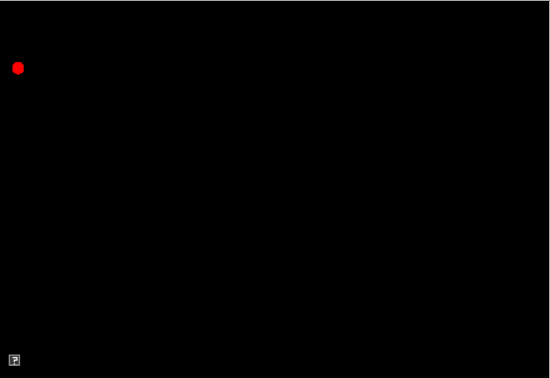
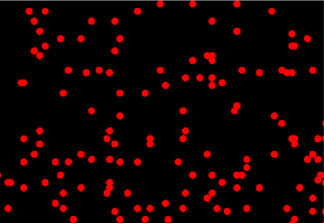

<html>
<head>
   <meta http-equiv="content-type" content="text/html; charset=UTF-8"/>
   <title>Submission Guidelines</title>
   <link rel="stylesheet" href="../astyle.css"/>
   <script src="https://cdn.rawgit.com/google/code-prettify/master/loader/run_prettify.js?skin=desert"></script>
</head>

<body>

<p>In this assignment, you will extend the 2D viewer to create a simple animation. 
The purpose of this assignment is 
<ul>
  <li>to familiarize you with cmake and the framwork we will use for the homeworks
  <li>to review C++ features and syntax
  <li>to experiment with the game loop and update method design patterns
  <li>to create some animations!
</ul>

<!--<p>The above might sound like a lot but this is meant to be a straight forward asignment. 
Most of the code will be given to you with some parts to fill in. In addition, every future 
assignment follows the structure from today, so if some aspects are confusing, don't worry. 
You will be comfortable with it by the end of the semester.-->

<p>To start, let's look at the implementation of viewer2d in <b>assignments/viewer2d/basicMain.cpp</b>

<pre class="pretty print lang-c">
#include "AFramework.h"

int main(int argc, char** argv)
{
    AFramework viewer(AFramework::Orthographic);
    viewer.init(argc, argv);
    viewer.run();
    return 0;
}
</pre>

<p>The above code will create a window capable of receiving user input and drawing graphics. The code for 
viewer3d is very similar. Each creates an instance of <b>AFramework</b> and then calls init() and run().
The run() function does not return until either 'Escape' is pressed or the window is closed. AFramework::run() 
implements our <b>game loop</b>, which will invoke callbacks for user events, update, and draw.
If you would like to learn more about main(), a good tutorial is 
<a href="http://www.cplusplus.com/doc/tutorial/program_structure/">here</a>. 

<p>The class AFramework supports two types of applications: orthographic (2D demos) and perspective (3D demos). 
In both, we use the term <b>camera</b> to refer to 
the location and direction in the world that we can see objects. Moving the camera allows us to see different 
parts of the world. The parameters of the camera control how much of the world we can see (sometimes called a view volume). 
Only objects in front of the camera can be seen.

<p>We use the term <b>scene</b> interchangeably with the term world to 
mean the set of all objects in our application. The orthographic and perspective applications have 
volumes associated with each camera which determine how much of the scene the camera will draw.
AFramework creates the following view for each demo type

<p><b>Orthographic</b><br><br> 
  <br><br>
  <ul>
    <li>Viewable world is a cuboid 
    <li>Defines a cuboid having dimensions screenWidth x screenHeight x 2000 units. 
    The origin of the world is located at the bottom left corner of the window. 
    <li>The view volume extents are X = [0, screenWidth], Y = [0, screenHeight], and Z = [-1000,1000]
    <li>No perspective depth. In other words, every object looks to be the same distance away from the camera and parallel lines always appear parallel.
    <li>Basic program: viewer2d
  </ul>
  <br>
  
  <p><b>Perspective</b><br><br>
  <br><br>
  <ul>
    <li>Viewable world is a truncated four-sided pyramid
    <li>Defines the pyramid with near distance = 0.1 and far distance = 500 and field of view = 60 degrees
    <li>Perspective depth. Objects closer to the viewer are larger than those far away. This is a traditional 3D view.
    <li>Basic program: viewer3d
  </ul>

<br>
<hr>
<h3>Step 1: Create a new application <b>A0-Hello</b></h3>
<hr>

<p>Under <b>/assignments/a0-hello</b>, create a new source file named <b>helloMain.cpp</b>. Use AFramework 
to create an orthographic viewer application, same as in viewer2d.

<br>
<br>
<hr>
<h3>Step 2: Build your new application</h3>
<hr>

<p>To build, you will need to extend the CMakeLists.txt files in the framework. 

<p>First, create a new CMakeLists.txt file in /a0-hello. Use the CMakeLists.txt file in viewer2d 
as a template. CMakeLists.txt defines four important pieces of information for building your application.
<ul>
  <li>include_directories(listOfDirectories)
  <li>link_directories(listOfDirectories)
  <li>add_executable(exeName, listOfSourceFiles)
  <li>target_link_libraries(exeName listOfLibraries)
</ul>

Change the parameters passed to <b>add_executable</b> to build a new executable named
<b>a0-hello</b> using your new source file.

<p>Then update <b>target_link_libraries</b> to also refer to your new executable.

<p>Second, tell cmake to build the contents of your new directory. Edit the 
<b>/assignments/CMakeLists.txt</b> to contain a new line

<pre>
add_subdirectory(a0-hello)
</pre>

<p>Try building your new executable to check that everything is setup correctly.

<pre class="prettyprint lang-sh">
> cd build
> cmake ..
> make 
</pre>

<p>Again, you should see a blank screen but we are making progress!

<br>
<br>
<hr>
<h3>Step 3: Override AFramework</h3>
<hr>

<p>AFramework implements a game loop pattern. We can customize it to create our own animations. 

<p>Define a new class AHelloViewer that derives from AFramework. AHelloViewer should override the 
virtual functions setup(), update(), and draw(). Virtual functions 
allow child classes to override the behavior of their base classes. (Note: To see which functions 
can be overriden in AFramework, you can look at the header file in libsrc/ui/AFramework.h).  If you would 
like a review of classes, polymorphism, and virtual functions in C++, skim the first few chapters only with chapter 15 of 
<a href="https://www.cs.swarthmore.edu/~newhall/unixhelp/thinkinginc++/Frames.html">Thinking in C++</a>. If you're 
familiar with object oriented principles from other languages such as Python or JAVA, C++ works similarly. 

<p>We will split our class implementations into header and source files. This organization is typical 
for C++ codebases. The header file (e.g. AHelloViewer.h) should contain the class declarations (See chapter 2 of 
<a href="https://www.cs.swarthmore.edu/~newhall/unixhelp/thinkinginc++/Frames.html">Thinking in C++</a> 
for more information). This is the information a user 
would need to know in order to use the class. The source file (e.g. AHelloViewer.cpp) contains the definitions (e.g. implementations) of 
the class's functions. 

<p><b>WARNING:</b> Don't forget to add #define sentries to avoid compilation errors due to multiple declarations! 

<pre>
#ifndef AHelloViewer_H_
#define AHelloViewer_H_

#include "AFramework.h"

class AHelloViewer : public AFramework
{
public:
    AHelloViewer();
    virtual ~AHelloViewer();
    void setup();
    void update();
    void draw();
};
#endif
</pre>

<p>The source file should include the implementations of the functions defined in the header. 
To start, let's create function stubs which simply print their names.

<pre>
#include "AHelloViewer.h"
#include <iostream> // system calls for printing to console

AHelloViewer::AHelloViewer() : AFramework(AFramework::Orthographic)
{
}

AHelloViewer::~AHelloViewer()
{
}

void AHelloViewer::setup()
{
   std::cout << "setup\n";
}

void AHelloViewer::update()
{
   // The amount of time since the last call to update
   // is returned by AFramework::dt()
   std::cout << "update " << dt() << std::endl;
}

void AHelloViewer::draw()
{
   std::cout << "draw\n";
}

</pre>

<p>Now update <b>helloMain.cpp</b> to use your new class and make sure it builds and runs correctly. 

<br>
<br>
<b>Coding style</b>
<br>

<p>Now is a good time to talk about coding style. The primary goal of a coding style is 
to make a codebase easier to read through consistent syntax. For example, the framework used in class 
tries to uphold consistent capitalization and spacing. A secondary goal might also be to prohibit 
potentially risky code practices.  For example, using macros to define simple functions can result in surprising  
behavior! (<a href="#note1">*</a>). But if we use templates instead we'll never run into these problems. 
Thus, a coding standard might specify that templates should be preferred to macros.

<p><b>Your code should strive to match the coding style of the framework. 
The guidelines can be found <a href="./codingstyle.html">here</a>.</b>
Also, please feel free to report mistakes or "pain points" as you work through the course in your assignment 
READMEs. Your suggestions will be integrated into the next version of the codebase.

<br>
<br>
<hr>
<h3>Step 4: Create a simple animation with a single object (25 points)</h3>
<hr>

<p>We will create a new class named <b>AShape</b> which implements the <b>update method pattern</b>. Additionally, 
we will implement AShape so it can be assigned and copied like a basic type. 
<ol>
  <li>(2 points) Create a new header and source file for AShape
  <br>
  <br>
  <li>(5 points) Define a basic class with the following constructor, destructor, update, and draw functions. 
  <pre>
    AShape();
    AShape(const AVector3&amp; pos, const AVector3&amp; color, int screenWidth, int screenHeight);
    virtual ~AShape(); // dtor, called on deletion
    void update(double dt);
    void draw();
  </pre>
  <p>The class AVector3 has been provided to store 3-tuple coordinates (points, vectors, colors). 
  To use them, include the header <b>libsrc/animation/AnimationToolkit-basecode.h</b>.
  The see the declaration for AVector3 look at <b>libsrc/animation/AVector3.h</b>. 
  <p>Colors are represented by red, green, blue values (RGB) ranging between 0.0 and 1.0 (See <a href="https://rgbcolorcode.com/">here</a> for an interactive color picker. Often, RGB colors are represented as unsigned integers between 0 and 255. To convert to a float, we simply divide each component by 255.0.)
  <p>Note the <b>&amp;</b> syntax used above. These indicate that we are passing AVector3 <b>by reference</b>. Quoting <a href="https://www.cs.swarthmore.edu/~newhall/unixhelp/thinkinginc++/Frames.html">Thinking in C++</a> (Chpt 11) <blockquote>A reference is like a pointer that is automatically de-referenced by the compiler.</blockquote> If we did not pass by reference, a copy is passed to our function, not the object itself! Furthermore, we are passing a <b>const reference</b>, which means that the constructor promises not to change pos and color. To summarize

<pre>
void foo(const A& a); // by const reference, A cannot change
void foo(A& a);       // by reference, A can change inside foo
void foo(A* a);       // by pointer, A can change
void foo(A a);        // by value, A is copied and passed, 
                      // A can change in the function, but the changes don't presist
</pre>

<p>One last cool thing about passing by const reference: it lets us call functions with temporary objects. For example,

<pre>
foo(AVector3(0,0,0)); // this vector won't live past the execution of the fn call
</pre>
  
  <br>
  <li>(2 points) Update AHelloViewer to contain an instance of your new shape. 
  AHelloViewer should call the AShape::update() and AShape::draw() functions in its own update() and draw() functions. 
  Update your CMakeLists.txt file and check your work.
  <br>
  <br>
  <li>(6 points) Define a copy constructor and assignment operator for AShape. Behind the scenes, C++ always creates default copy constructors and assignment operators for each class you create. However, it's best practice to define these yourself (For more information into why, please read Chpt 2, Item 5 from Effective C++). In short, the default version may have behavior you don't want. 
<pre>
AShape(const AShape& shape); // copy ctor
AShape& operator=(const AShape& shape); // assignment operator
</pre>
  
 <p>The copy and assignment operators allow to initialize objects in an intuitive way. 
  <pre>
A a;      // call default ctor
A a2;     // call default ctor
A a = a2; // call copy ctor
A a(a2);  // call copy ctor
a = a2;   // call assignment operator
</pre>
  <br>
  <br>
  <li>(4 points) Define member variables for AShape which store position, color, screenWidth, and screenHeight. Set their starting values in the constructor based on the passed arguments.
  <br>
  <br>
  <li>(2 points) Implement AShape::draw(). The framework defines several default shapes in <b>libsrc/ui/AGLObjects.h</b>. Choose the sphere, call ASetColor() with the shape's color and the call ADrawSphere() with the shape's position and radius 5.
  <br>
  <br>
  <li>(4 points) Implement AShape::update(float) to move the shape in the direction of (100,100,0). Use the delta time (dt) so the object moves at a constant rate. If either the x or y coordinates exceed the size of the screen, wrap their value back to zero. 

<p>You should have a single sphere that travels towards the upper right of the screen.
<br><br>

</ol>

<br>
<br>
<hr>
<h3>Step 5: Create a simple animation with many objects (10 points)</h3>
<hr>

<p>Now, we will create lots of instances of AShape. use the standard template library to create a list of shapes to be updated each frame and to initialize each sphere with 
a random location. 

<ol>
  <li>(5 points) Extend AHelloViewer to use <a href="http://www.cplusplus.com/reference/vector/vector/">std::vector</a> to contain a large number of AShapes (100 at least). 
  Vector containers are part of the standard 
 template library for C++, which collects many useful data structures and algorithms. You can store either AShape instances of AShape* instances. Using a pointer 
 will allow you to keep both AShape and any subclasses in the same array. However, if you store pointers, make sure you remember to delete them in ~AHelloViewer!

<pre>
std::vector<AShape*> _shapes;
</pre>

  <li>(5 points) Randomize the positions for each shape.
The new C++ numerics library supports more powerful random number generation 
based on many useful distributions. For your assignment, try using the new 
<a href="http://en.cppreference.com/w/cpp/numeric/random/uniform_real_distribution">uniform number generator</a>
<pre>
std::default_random_engine generator;
std::uniform_real_distribution<double> distribution(0,1);
auto dice = std::bind(distribution, generator);
std::cout << "RANDOM NUMBER: " << dice() << std::endl;
</pre>
<p>Now you should see 100 spheres traveling at the same upward angle. <br><br>


</ol>


<br>
<br>
<hr>
<h3>BONUS: Do something cool or quirky (up to 2 points)</h3>
<hr>

<p>Even with just spheres, it's possible to make an interesting demo!
<br> 
<br> 


<a href="http://thebookofshaders.com/edit.php#09/marching_dots.frag"></a>

<p>Create a unique animation effect. Good submissions should be ambitious, creative, and contain 
smooth movement (e.g. use <i>dt</i> to update smoothly). For credit, you must 
submit your code and a video. Please create a new application rather than editing the assignment 
code directly. 

<p>Some ideas

<ul>
<li> Jitter colors by adding a random offset to a base color
<li> Modulate color intensity using sin
<li> Change the color based on the current position
<li> Use different sized spheres
<li> Arrange spheres in a grid, or in concentric circles
<li> Use more interesting velocities for the particles, for example
<ul>
  <li>Use sin/cos to create oscillating movement (falling snow?)
  <li>Use sin/cos to create spiral movement (see above)
</ul>
<li>Use ADrawLimb() to draw ellipses between points
<li>Create a composite shape and use sin to animate parts (like the face example above)
</ul>

<br>
<br>
<hr>
<b>Notes:</b>
<br>
<p id="note1">(1) Here's a good example from Scott Meyer's book <i>Effective C++</i>

<pre>
#define max(a,b) ((a) > (b) ? (a) : (b))

int foo()
{
  int a = 5, b = 0;
  max(++a, b);    // a is incremented twice
  max(++a, b+10); // a is incremented once
}
</pre>
</p>
<p>(2) The basecode will use shared libraries for solutions. Be aware that if you change the header files, linking against precompiled libraries will not work.
</div> <!--content--> 
</body>
</html>

